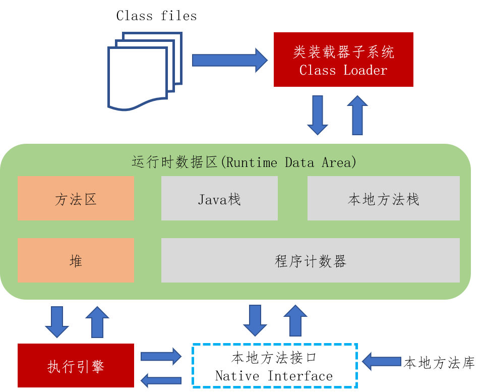
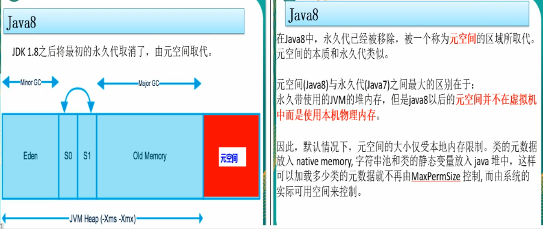
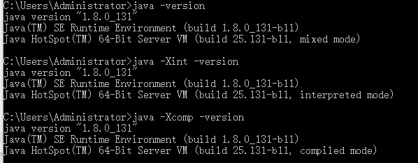

JVM
JVM内存结构
JVM体系结构概览

- 类加载器，分为4种。启动类（根）、扩展类、应用类、自定义类。
- 图中灰色的，线程私有，几乎不存在GC。
- GC作用域：橙色部分。大概率存在GC。
Jdk8以后的JVM
移除了 Permanent Generatien for VM metadata
添加了 Metaspace VM Metadata in native memory

JVM调优及参数配置
JVM参数类型
标配参数
- -version
- -help
- java -showversion
X参数（了解）
- -Xint: 解释执行
- -Xcomp: 第一次使用就编译成本地代码
- -Xmixed: 混合模式 （java默认）

XX参数 (重点)
Boolean类型
- 公式：-XX:+或者-某个属性值 （+表示开启，-表示关闭）
是否打印GC收集细节
jinfo -flag PrintGCDetails 13632-XX:+PrintGCDetails
-XX:-PrintGCDetails- 是否使用串行垃圾回收器
-XX:+UseSerialGC
-XX:-UseSerialGC
KV设值类型
- 公式：-XX:属性key=属性值value
配置元空间 jinfo -flag MetaspaceSize 4300
-XX:MetaspaceSize=128m
- 新生代老年代交换次数，默认15次 -XX:MaxTenuringThreshold=15
jinfo举例
如何查看当前运行程序的配置
jinfo -flag 配置项 进程编号
- jps -l jinfo -flag InitialHeapSize pid
- jinfo -flags pid
题外话（坑题）
栈管运行，堆管存储
- -Xms: 等价于 -XX:initialHeapSize 初始大小内存 默认为物理内存的1/64
- -Xmx: 等价于 -XX:MaxHeapSize 最大分配内存 默认为物理内存的1/4
- -Xss: 等价于 -XX:ThreadStackSize 设置单个线程栈的大小，一般默认为512K~1024K (=0，代表默认值，依赖于平台，参见官网)
- -Xmn: 等价于 设置年轻代大小
- -XX:MetaspaceSize: 元空间（不在虚拟机中，而是使用本地内存）
- -XX:PrintGCDetails: 输出详细GC收集日志信息
- -XX:SurvivorRatio: 设置新生代中eden和S0/S1空间的比例。默认-XX:SurvivorRatio=8，Eden:S0:S1=8:1:1。设置eden的比例多少，S0、S1比例相同。
- -XX:NewRatio： 设置老年代的占经，剩下的1给新生代。如NewRatio=2，则新生代占1，老年代占2。
- -XX:MaxTenuringThreshold：默认值15，设置新生代转为老年代的阀值。
查看JVM家底参数（重要）
java -XX:+PrintFlagsInitial -version （查看默认值）
java -XX:+PrintFlagsFinal -version （查看修改更新）
其中：=、:=（代表改动过）